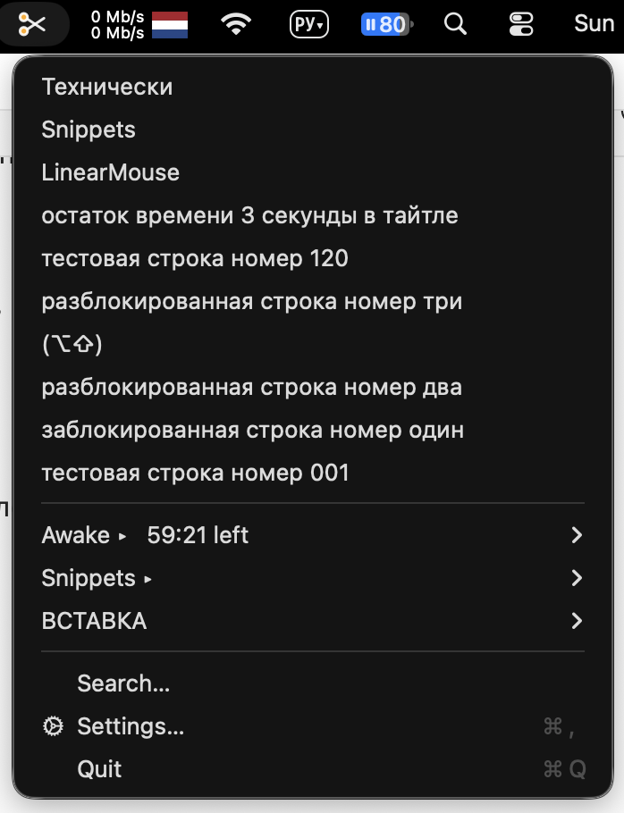
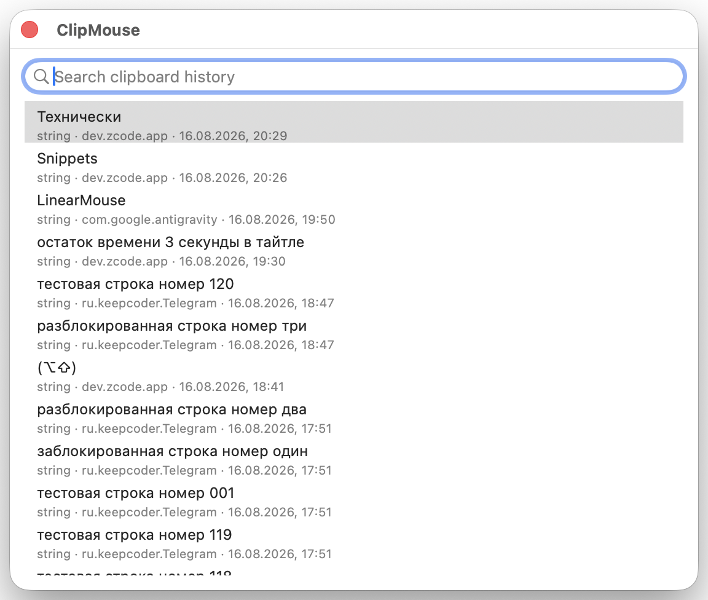
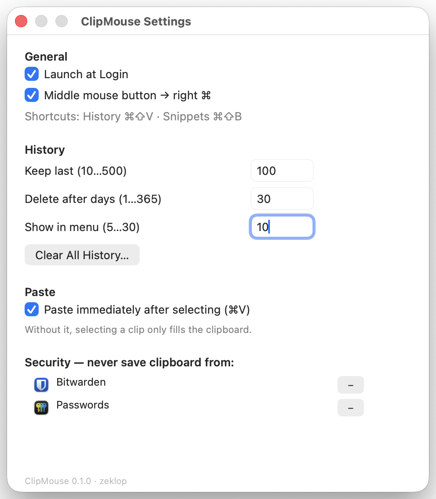

Буфер обмена, сниппеты и «не засыпать» — одна иконка в меню-баре
ClipMouse — нативный агент для macOS 26. Заменяет ClipMenu 0.4.3, правило Karabiner и KeepingYouAwake: история с дедупликацией, поиск как в Spotlight, защита секретов и таймеры кофеина. Без сети, телеметрии и зависимостей.
macOS 26+ · Apple Silicon · 0 зависимостей

Возможности
Всё, что раньше делали три утилиты, — в одном нативном приложении.
История буфера
Текст, ссылки, картинки, PDF и файлы — до 200 записей (настраивается до 500). Повторы схлопываются, хранение — 30 дней.
Поиск как в Spotlight
Панель с фильтром по содержимому и по приложению-источнику: запрос «Telegram» покажет всё, что вы копировали из Telegram. Правый клик по клипу — удалить или заблокировать источник.
Умная вставка
⌥ вставляет чистым текстом, ⌘ — POSIX-путём. Автовставка через синтетический ⌘V опциональна и по умолчанию выключена.
Сниппеты
Категории и управление прямо в меню. Плейсхолдеры {date:HH:mm}, {clipboard} и {uuid} разворачиваются при вставке.
Защита секретов
Токены (sk-, ghp_, PEM), номера карт и высокоэнтропийные строки не сохраняются; Bitwarden, Passwords и Terminal — в чёрном списке из коробки. ⌥ сохранит принудительно.
Режим «не засыпать»
Правый клик по иконке — и Mac бодр час: таймеры от 5 минут до бесконечности, порог батареи, остаток виден в оранжевых кольцах. Скриптам — clipmouse://caffeine/activate?seconds=N.
Средняя кнопка → правый ⌘
Средняя кнопка мыши становится правой Command — для голосового ввода в Spokenly. Watchdog ловит залипание модификатора, окно подавления не пускает диктовки в историю. Карта живёт здесь, а не в Karabiner.
Нативный и лёгкий
Чистый AppKit на Swift 6, ноль сторонних зависимостей, SQLite в WAL, автозапуск. Собственный сертификат — права переживают пересборки. В простое — около 0 % CPU.
Экраны
Настоящий интерфейс приложения — без графической выдумки.

Меню истории
Пустой запрос — вся история целиком (в меню бара — только последние 10): содержимое, приложение-источник и время каждого клипа. ⏎ — вставить, ⌥ — чистым текстом, ⌘ — POSIX-путём.

Настройки
Одно окно без вкладок: автозапуск, лимиты и срок истории, автовставка, чёрный список приложений и таймеры Awake. В футере — версия и автор.
История не покидает ваш Mac
ClipMouse не ходит в сеть — вообще. Ни телеметрии, ни аналитики, ни «домашних» обновлений: считать нечего, счётчиков нет.
Замерено на живом процессе, а не обещано на слово.
БД с правами 0600
SQLite лежит в ~/Library/Application Support: файл 0600, каталог 0700, исключён из бэкапов.
Скрытое не читается
Типы пастборда Concealed, Transient и AutoGenerated пропускаются — менеджеры паролей помечают копирование сами.
Чёрный список
Bitwarden, Passwords и Terminal заблокированы по умолчанию; правый клик по клипу — Never save from этого приложения.
Дамп перед очисткой
Clear History сначала пишет резервный дамп — случайная очистка ничего не теряет.
Установка из исходников
Готовых сборок пока нет — ClipMouse собирается одной командой из репозитория. Фазы 0–6 реализованы, идёт наблюдательная неделя.
Клонируйте репозиторий
Понадобятся Command Line Tools для Swift 6 — Xcode не нужен.
make install
Соберёт release-сборку, сгенерирует иконку icns, подпишет (свой сертификат подхватится сам) и скопирует в /Applications.
Разрешения при первом запуске
Разрешите доступ к буферу обмена и выдайте Accessibility — приложение само подскажет, где нажать.